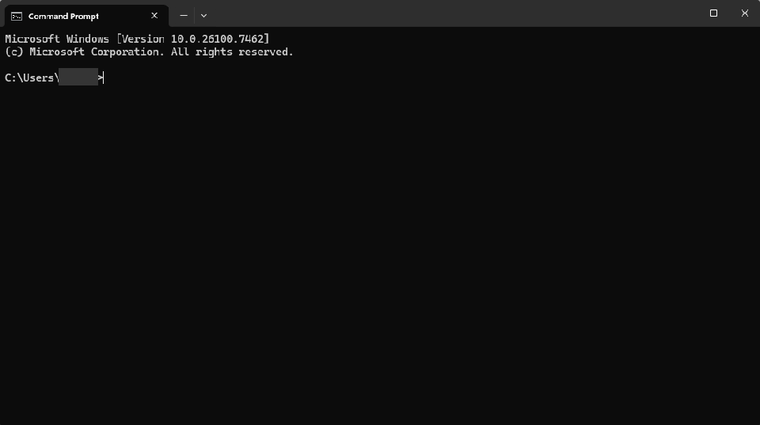
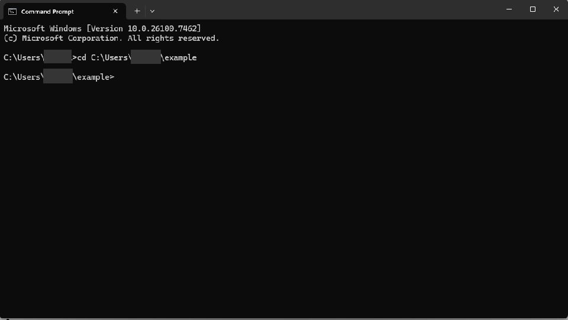
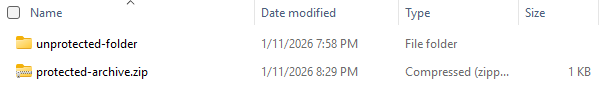

First you need to install the program
Second, open a command prompt window
Third, navigate to the directory containing the folder you want to go to
Finally, type zipencrypt unprotected-folder protected-archive.zip password123, replacing unprotected-folder with the name of the folder you want to protect, protected-archive.zip with the name of the protected ZIP archive you want to create, and password123 with the password you want.

Then the password-protected ZIP archive will appear!
